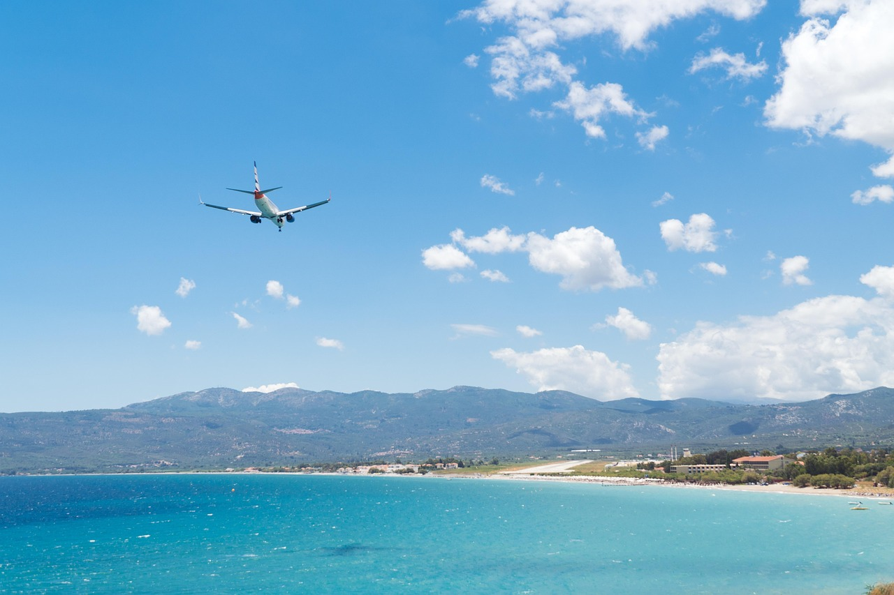
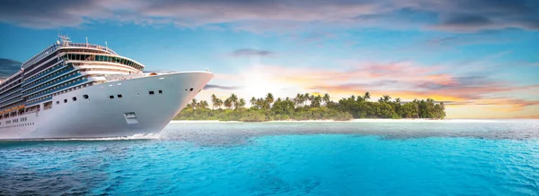
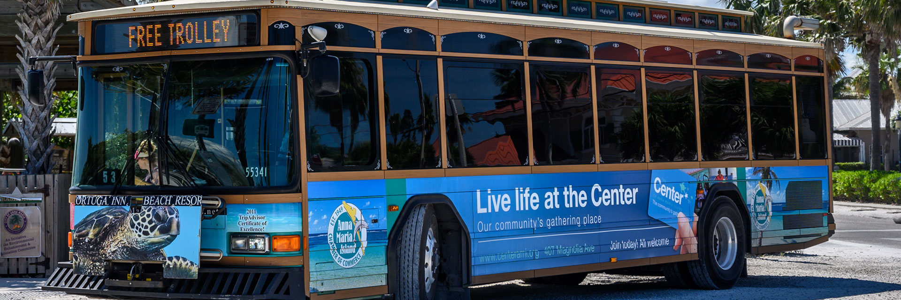

Transportation
Taniti welcomes visitors primarily by air at its small airport, soon to be expanded for larger jets. A small cruise ship also makes a weekly stop at Yellow Leaf Bay. Getting around is convenient with readily available taxis in Taniti City and public buses operating from 5 a.m. to 11 p.m.

Air Travel
Most visitors arrive by air at Taniti's airport, which is expanding to accommodate larger jets.

Cruise Ships
A small cruise ship docks in Yellow Leaf Bay one night per week.

Ground Transportation
Taxis are available in Taniti City, and public buses run frequently within the city limits.